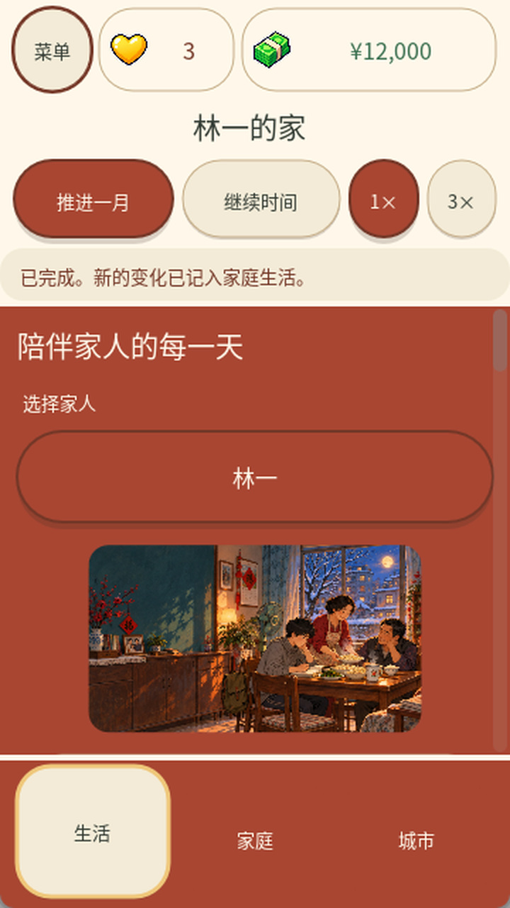
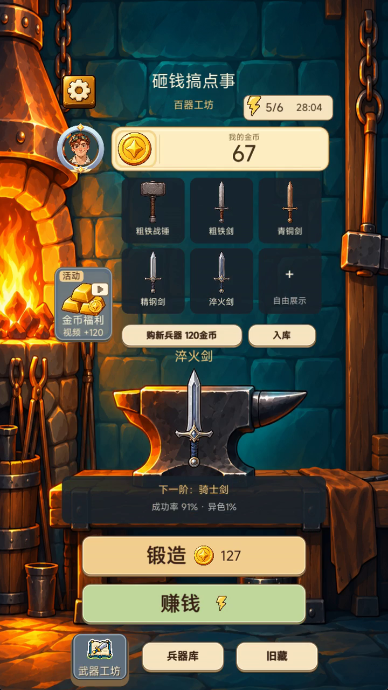
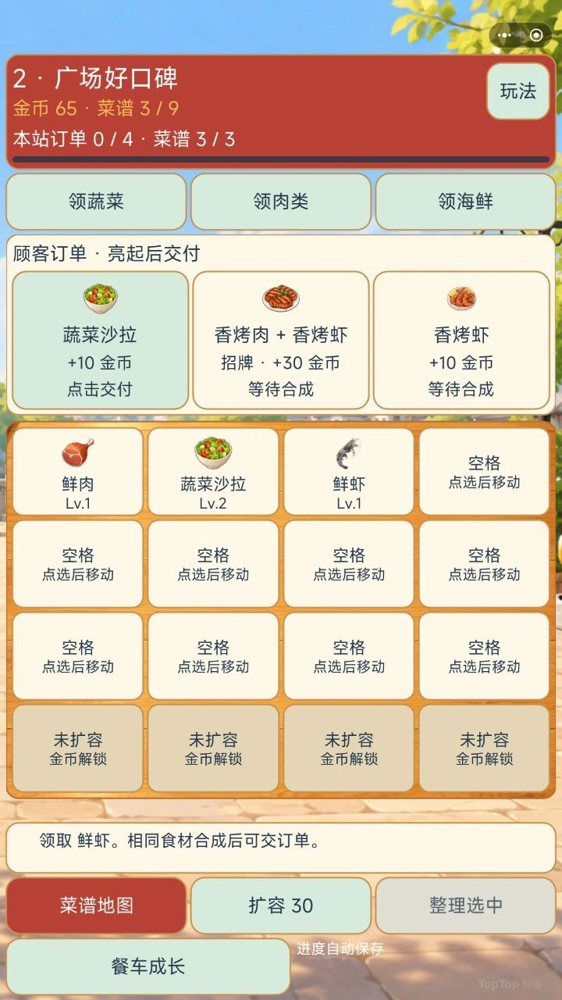
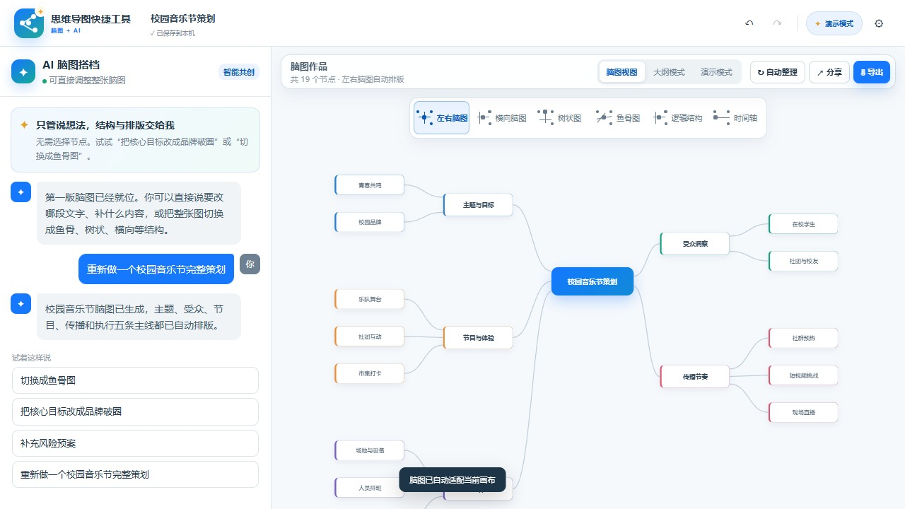

小游戏 · 唯一策划
成语小秀才
主导成语答题、科举题材包装与养成线，把文字关卡和升官成长连接起来。
- 成语答题
- 科举包装
- 成长循环
GAME PRODUCER / RESUME
游戏制作人 / 项目负责人，兼具主策划与系统策划经验。连接玩法设计、跨职能协作与研发交付，以职业项目、独立游戏和 AI 实践呈现工作价值。
SELECTED CAREER / 代表案例
01 / CAREER TIMELINE
中国式相亲 · 名利游戏
以主策划 / 执行制作人角色连接系统设计与项目推进：负责《中国式相亲》系统框架到落地、剧情大纲与验收；在《名利游戏》负责全部系统界面功能和线路图绘制摆放，参与分支线路与数值奖励设计配置，不含剧本创作。
查看我的角色 ↗我的小镇 · 作妖计
主策划负责《我的小镇》的任务、宝箱、图鉴、新手与数值设计，并参与《作妖计》小游戏的魔罩、魔宠系统；以框架、配置、交互和版本化文档连接设计与研发交付。
查看我的角色 ↗Wordvillas · Words with Colors
在约百人规模项目中协作程序、美术与剧情组，推进 Wordvillas 分支剧情、锦标赛、活动及投骰子玩法上线，承接排期、任务拆分、组内验收与项目文档等部分 PM 工作。
查看我的角色 ↗成语小秀才 · 谁是火车王 · 百变汪星人
作为《成语小秀才》项目唯一策划，主导玩法、科举题材包装与养成线；同时保留《谁是火车王》《百变汪星人》的主策划项目经历。
查看我的角色 ↗纸片少女 · 造物梦工厂
结合 QA 管理与游戏策划，承担测试管理、关卡调优、资源整理及主支线任务文案，形成从质量检查到内容设计的工作基础。
查看我的角色 ↗计算机科学与技术 · 本科 · 2015.09—2017.07
02 / SKILL TREE
从关卡、任务到系统规则，用职业项目串联设计经验。
项目排期、任务拆分、组内验收与文档交付，连接策划、程序、美术和剧情。
PC 端操作、UI/UE 与新手流程，沿着问题调整体验。
职业测试管理经历，以及个人工具中的验收与一致性检查。
用于文档撰写与检验、表格与数值工具、项目管理，以及个人工具和小游戏开发；独立游戏中也探索 UI、角色、配音与音乐音效制作。
把想法、关卡和任务变成可编辑、可交接的结构。
CAPABILITY / 方法与协作
我负责产品判断、任务组织与验收，
让 AI 产出进入团队的实际研发流程。
从需求收口、原型验证到任务跟进与测试复盘，连接策划、程序与美术的协作。
查看协作方法与职责 ↗AI PRACTICE / 工具运用与场景实践
Windows 桌面工具
围绕实际任务，
选择并组合 AI 工具。
将 AI 工具运用到资料整理、内容构思与视频制作：先明确目标，再选择工具、准备输入、检查产物，并把操作方法整理成新手可复用的步骤。
我负责应用场景、工具使用路径与效果判断；通过 Codex 辅助实现和验证，将零散工具整理为面向实际问题的工作流。
查看 AI 工具应用与真实成果 ↗
03 / PERSONAL PROJECTS
独立游戏、AI 工具与个人实践。
从闲暇创作到 AI 协作，持续探索游戏与工具。
INDEPENDENT GAMES / 两人合作
在参与《中国式相亲》期间，我利用闲暇时间与一位程序员合作，以两人团队开发了以下独立游戏。

我的分工
负责全部策划内容，包括关卡设计、数值设计、策划文档，以及 UI/UE 界面设计。
版本迭代：针对重复操作，设计自动售卖、战斗后资源结算和“完成战斗后进入下一天摆摊”的规则；5月版本文档标注已完成。弱点血条、章节难度调整和车身分化为文档标注进行中，不能混写成已交付成果。
经营设计依据《摆摊经营规划》的食物、食物配方、食物特性、NPC、食材和摊位六张表。表内价格标为“旧版定价”；配置结构不证明最终成交算法或上线状态，本页不公开完整价格、配方数量与成功率配置。
本轮案例依据本人提供的《关卡战斗规划》《舌尖上的魔术师》5月版本修改、项目甘特图及关卡设计。关卡设计的修订表记录 2024 年 5 月 21 日由吴天昊创建；个人分工由本人确认。完成状态仅引用文档记录，不等同于最终上线核验；不将留存、效率等预期写成实测成果。菜品售价等条目的标题与正文状态有冲突，暂不认定完成。
此前在线版本排期包含 17 项策划任务，最后修改于 2024 年 9 月，前三项标为“进行中”，其余标为“待启动”。它与本轮甘特图是不同资料快照，不互相覆盖；排期不作为全部完成或上线的证明。完整配置、成员信息及文档内的外部参考图不公开。

驾驶魔法战车探索奇幻世界，收集资源、对抗怪物；通过延长车身、升级魔塔构建移动防线，再用珍稀食材烹饪增能美食、摆摊交易，将塔防、建设与经营连接起来。
玩法简介依据官方 Steam 页面。

我的分工
负责全部策划内容，包括关卡设计、数值设计、策划文档，以及 UI/UE 界面设计。
参考本人提供的《除灵事务所》开发时间轴与开发历程完整回顾，两份均为 AI 后期整理资料。个人职责依据本人确认；开发过程与设计内容依据回顾记录，不作为所有方案全部上线或经营效果的证明。程序实现由合作者负责，回顾中其他人员署名的任务不归为本人独立成果。

灵异题材的卡牌构筑与轨道连消，结合恶灵养成、随机事件与策略取舍。
玩法简介依据官方 Steam 页面。
AI GAME DEVELOPMENT / 个人作品
Ring Haven · 休闲解谜
我用 AI 做出了一款圆环解谜游戏。
从旋转解扣的操作反馈，到 30 个炸弹关、30 个奖励关，我把玩法想法逐步做成了有闯关节奏的游戏。每日挑战的胜利奖励还能带回主页，为海狸换装。
查看游戏与 AI 创作过程 ↗
TAPTAP MAKER / 个人 AI 游戏实践
从玩法策划、关卡与数值设计，到界面、美术整合和版本迭代。每款作品附当前公开展示图、玩法说明和 TapTap 入口。
家庭照护 / 角色调度 / 生活模拟

为爸妈和祖辈安排照护分工，在冲奶、喂养、清洗、洗护与哄睡之间调整节奏，也要让家人及时休息。
TapTap 公开测试 · 2026.10.25 核对
三牌构筑 / 城池经营 / 自动战斗

选择阐教或截教英雄，用三张手牌经营城池、布置建筑与军团。有限空间和铜钱决定每年的准备，布阵完成后自动交战。
TapTap 公开测试 · 2026.10.25 核对
人生模拟 / 月度经营 / 家庭关系

安排虚构角色的学习和工作，管理每月收支与住宅，在事件中作出人生选择。结识伙伴、建立家庭，再从家谱和人物档案回看经历。
TapTap 公开测试 · 2026.10.25 核对
滑动解谜 / 夜市收纳

在暖灯夜市里滑动桃桃、抹茶和团团，借箱子与伙伴挡住去路，把大家送回同色摊位。先预览落点，再安排移动顺序。
TapTap 公开测试 · 2026.10.25 核对
配对消除 / 概率锻造 / 收集养成

配对消除铜钱、银子和金砖，再把收入带回百器工坊。购入剑、斧或锤，沿独立进阶路线锻造、变异并安排收藏展示。
TapTap 公开测试 · 2026.10.25 核对
合成料理 / 轻经营 / 旅行收集

开餐车领取食材，合成九道料理，完成顾客的单品与组合订单。收入用于扩容、升级和旅行，按自己的节奏经营六个美食站点。
TapTap 公开测试 · 2026.10.25 核对
叠球配餐 / 订单匹配 / 关卡挑战

看清顾客要的口味层次，点选四色冰球，叠好甜筒后通过传送带交餐。300 关串起不同主题场景，每日挑战与小店装扮提供后续目标。
TapTap 公开测试 · 2026.10.25 核对
文字冒险 RPG / 灯火探索 / 局外成长

提灯进入 30 层天坑，在有限灯火中判断战斗、用药和绕行。带回永久成长，再用技能、装备和炼药调整下一次出发。
TapTap 公开测试 · 2026.10.25 核对
低重力驾驶 / 运输任务 / 叙事探索

驾驶六轮月球货车连接六座据点，在低重力路面保护不同货物。导航、太阳能和巡路援助服务运输，联络员与地球家书让旅途带上故事。
TapTap 公开测试 · 2026.10.25 核对
旧物修理 / 轻经营 / 叙事益智

在街角小铺检测台灯、音乐盒和风扇，清理、校正、组装再测试。短益智连接修理动作，街坊故事和店铺成长赋予旧物新的去处。
TapTap 公开测试 · 2026.10.25 核对
像素贴纸 / 场景布置 / 轻松收纳

用小镊子从透明薄膜上揭起贴纸，把家具和小物贴成温暖房间。五大主题、45 个场景与 600 件贴纸，完成目标后继续自由布置。
TapTap 公开测试 · 2026.10.25 核对
AI & TOOLS / 个人工具实践
将需求整理、结构表达和多任务协作，做成可以直接体验的工具。

需求与交付
从讨论，到可以开工的任务。
整理群聊与策划文档，核对决定和疑问，拆成六职能任务、验收标准与改动影响。
完整示例可离线体验；模型连接可选。


多任务协作
多个上下文，同一个工作台。
并排查看任务与对话，直接输入消息、辨认运行状态，并拖拽调整卡片位置。
网页为安全演示，不读取访问者的 Codex。
项目总览
集中汇总全部应用、小游戏和工程体验，统一查看演示、视频与适用的平台版本。
AI 用于整理项目说明、入口状态、兼容信息和维护建议。
小游戏产品洞察
把国内与海外榜单、行业知识库、玩法拆解、发布合作和开放接口放在同一张开发者工作台上。
AI 参与榜单清洗、知识摘要、关联推荐和异常回退；投稿审核后公开，站点每天北京时间 07:10 后检查更新。
Unity 跨平台小游戏
竖屏冰激凌配单游戏：按顾客需求制作甜筒，连续闯过 10 个关卡，支持在线试玩与 Windows、Mac 桌面游玩。
AI 参与玩法扩展、10 关配置、UGUI 预制体、750×1624 安全区适配、进度存档、WebGL 与双平台桌面构建及发布验证。
Unity H5 小游戏
机场安检审核题材的竖屏闯关小游戏，切换普通、X 光和轮廓视图，判断行李能否放行。
AI 参与玩法设定、关卡规则、文档排版、Unity 工程拆分、程序化 UI 和 WebGL 构建同步。
Unity 微信小游戏原型
以成语填字和诗意来信为核心的竖屏小游戏，使用 Unity UGUI 搭建界面，支持调试面板、关卡快照和过关结算。
AI 参与玩法拆解、UGUI 预制体结构、750×1624 适配、关卡内容、WebGL 发布页和下载包整理。
AI 开发桌面工具
醒目的额度数字与进度条贴在桌宠上方；Codex 桌宠优先，没有时自动使用内置西装仓鼠。
工具只读本机 Codex 额度与任务完成事件，不接触 auth.json；始终只显示一个宠物，并支持开机启动、托盘、固定置顶及 Windows/macOS 双平台工具包。
AI 开发桌面工具
自动扫描真正需要你回复的 Codex 任务；空闲时左侧收纳，左侧悬停展开竖版面板，可查看原任务，并按需开启自动确认。
桌面端通过本机 codex app-server 和会话日志识别未决确认，不读取凭据；Windows/macOS 负责真实线程操作，iOS 提供可安装的演示伴侣入口。
网页素材整理
输入网页 URL，在始终置顶的桌面窗口里扫描、筛选、预览并批量下载公开网页素材。
AI 参与产品定位、桌面交互设计、跨平台打包说明、参赛说明和工具文案整理。
2D 推箱子解谜小游戏
只有两关的竖屏推箱子原型：第一关一推即过，第二关开场扫出大地图，再缩回当前区域，让玩家在低理解成本里一路觉得快过了。
AI 参与玩法定位、第二关大地图结构、推箱子规则引擎、Canvas 渲染、移动端操作和自动化通关测试。
游戏立项与需求工具
用快速选项和可展开问卷整理小游戏立项需求，生成可直接交给 Codex 的项目需求与 Unity 微信小游戏通用开发记忆。
工具把用户选择整理为结构化 Markdown，让 Codex 先检查关键缺失和冲突，再按 Unity 2022.3.62f3c1、uGUI、750×1624 与微信小游戏约束开展设计和开发。
游戏需求与 AI 开发
通过灵感组合和开发配置，一次生成可直接交给 Codex 等 AI 工具执行的游戏开发任务书。
工具把设计者的选择整理成包含技术环境、核心循环、MVP、模块、风险、验收标准和原型计划的结构化 Markdown。
策划训练答卷
60道通用游戏策划基础题，覆盖玩法、系统、关卡、数值、经济与数据等10类知识；每天抽取10题，提交后查看答案、解析和练习建议。
AI 后续可接入主观题点评、错题解释、同类练习生成和能力画像总结；当前版本先完成每日抽题、倒计时、自动批改和本地记录。
AI 内容生成
输入旅行心情和目的地，生成拍照任务、九宫格结构、预算建议和可直接发布的朋友圈文案。
AI 理解场景与情绪，生成拍照任务、图片收集建议、预算提醒和多风格分享文案。
浏览器插件
面向飞书文档和文件资源整理场景，提供更清晰的批量下载和插件说明入口。
AI 参与需求拆解、交互文案、安装说明和审核材料梳理。
效率工具
导入 Codex 对话记录，按维度评分并给出问题与改进建议，可导出 Excel 复盘表。
AI 用于总结对话、抽取任务进展、检查风险点并形成复盘报告。
Codex 效率工具
把常用模型、中文界面、全局快捷键、任务命名和对话报告集中到一个本地设置工具里。
AI 用于归纳任务内容、生成精简名称、提取对话报告，并把个人使用习惯沉淀为可复用的本地配置。
AI 表达转换
把一段话转换成情绪表达、生活说明、情书暗语、多语言或古诗古文版本。
AI 用于识别表达意图、切换语气风格、生成多语言版本，并把复杂内容整理成可直接使用的文本。
美术设计参考
作为砖块叠层显露的美术参考，用于比较材质、百叶窗、棋盘格、遮罩与形变回退，帮助团队挑选克制且明显不同的呈现。
AI 参与动效方案拆分、暴露进度模型、交互原型、慢速对比、自动化测试和公开发布。
Unity WebGL 小游戏
围绕新疆馕设计的竖屏休闲解谜体验：把不同馕放入烤位，利用火候、温区与订单顺序完成十个普通模式关卡。
AI 参与玩法规则、十关解法、纯图形馕资源、UGUI 产品流、WebGL 构建与发布验收。
桌面自动化工具
把定点连点、点击录制、动作编辑与循环回放放进同一工作台，用快捷键避开录制控制按钮，并在每次点击后尽快恢复光标位置。
AI 参与跨平台输入适配、线程安全任务编排、桌面交互设计、自动测试、原生打包和公开教程制作。
媒体压缩工具
在设备本地批量压缩图片、视频、GIF、音频和一般文件，严格无损默认开启，原件永不覆盖。
AI 参与压缩策略编排、无损边界说明、跨平台执行引擎、自动测试和公开教程制作。
AI 互动实验
从 30 个受控实验中本地匹配模型，拖动参数，并在 5 种图表视图间切换，观察指标、曲线与结论如何变化。
AI 参与 9 种确定性模型设计、问题匹配、安全边界、交互体验、自动测试与公开教程制作；公开版不调用远程模型。
美术设计参考
同步 Unity 正式配置的45个砖块小人、11件随身小物，默认全解锁；左侧筛选列表，右侧详情与换装检查同步呈现。
AI 参与 Unity 配置与贴图同步、角色分层还原、横版双图鉴、视觉位置统计和响应式排版验收。
AI 情报工具
贴吧式整理 X 上 Tibo、马斯克、Codex 与 OpenAI 官方发言，每天北京时间 08:00 检查 Token／额度重置预告；首屏可展开中英文对照的完整原帖、中文翻译、编辑整理与精选评论。
AI 参与公开来源聚合、Tibo 专项监测、身份与主题分层和中文整理；公开演示保留完整英文原帖、中文翻译、重要评论及可核验链接，私有站点每天北京时间 08:00 检查真实帖子。
AI 音乐工作流
在浏览器本地分析参考音乐，编排循环背景音乐提示词批次，并比较候选与维护授权台账。
AI 辅助把本地音频特征归纳为风格画像和提示词计划；原始音频、路径与个人文件名不写入可导出项目状态。
游戏物品展示
集中浏览砖块角色的随身小物，按数量、物品 ID 或中文名排序，并用苹果桌面式拖拽整理陈列顺序。
AI 参与小物素材整理、透明像素视觉居中、密集响应式陈列、拖拽动效、可导入导出的本地编辑能力与自动化验证。
项目开发
左右独立导入关卡，一键载入羊 900121 与 Paws 0020 示例；切换参考图复现和当前工程规则，对比 V 曲线与河道上下界。
工具完全离线，内置羊关卡库与 Paws 关卡；1.5 版明确区分参考图算法和当前工程规则，修正侧锁、进度口径与河道显示，支持双侧导入和报告导出。
实时 3D 小游戏
与四名驻站 NPC 合作，完成重连基地、回收失联货物和中继供能三段委托；管理载重、货物完整度与配送评级。
AI 参与实时 3D 场景、车辆物理、任务流程、键鼠与触控操作适配，以及公开网页体验的构建与验收。
Unity 直播互动游戏
俯视航行、船上视角救人。一起选路、修船和照明，在三段风暴中带三个人回家。
Unity 规则状态机、模拟观众事件、可恢复的 Windows 客户端与 WebGL 试玩共同构建；正式抖音直播权限尚待官方 SDK 和真实直播间联调。
双节活动交互原型
月饼碰三次，喜欢哪件就换哪件。体验中秋国庆活动的自由兑换、限定砖块皮肤与完整挑战结算流程。
基于游戏美术资源制作750×1624交互原型；可切换演示日期，调出成功、暂无可消和墓碑失败页面。关卡为简化演示，不代表正式难度。
游戏UI交互原型
点击横幅展开公告，切换查看更新与挂件焕新补偿说明。
基于游戏美术制作响应式网页原型，图片等比显示，支持内联展开和单项切换。仅演示交互，不发放奖励。
游戏策划学习
从玩家动机到随机奖励与虚拟交易，沿50课路线学习；当前19课可阅读全文。
原创教材、全文讲解、知识脑图和参数实验；逐课引用并核验参考来源。阅读与同内容音频可替代，学习记录仅存本地。
目录核对：2026-11-17 · 根据公开 Hub 整理。各项目的演示、下载及适用范围以项目页说明为准；不将全部工具称为在线模型服务。
04 / PERSONAL AGENT PRACTICE
以游戏需求开工台为例。
这里展示已有能力的阅读流程。
INPUT / 保留依据
粘贴文本或导入材料，提取决定、疑问和范围。任务可以回到来源证据，避免上下文在整理中丢失。
确认材料范围与关键原文，区分已经决定的内容和仍需确认的问题。
STRUCTURE / 可执行任务
围绕策划、客户端、特效、音频、动画与测试，组织产物、依赖和验收项，把讨论变成能继续推进的工作。
确认分工和实现范围；任务中的负责角色不代表真实团队成员或本人的履历。
REVIEW / 一致性检查
检查任务是否有验收依据、依赖是否完整、疑问是否解决。生成结果需要校对，不能直接视为已确认事实。
核对疑问与验收口径，再决定是否标记为可交付；自动检查不能替代实际验收。
HANDOFF / 可检查产物
导出 Markdown、JSON、CSV 或 Codex 上下文包；比较前后版本，查看需求改变影响哪些任务和验收项。
确认导出内容与当前版本一致，再交给团队或实现 Agent；公开示例不等于生产效率数据。
05 / CASE FILES
问题、设计取舍、产物与边界。
案例依据公开资料，AI 参与方式逐项说明。
如何让讨论变成能开工、能验收的任务？
如何同时看见上下文，又能直接继续对话？
如何用短局玩法验证观众行动与救援反馈？